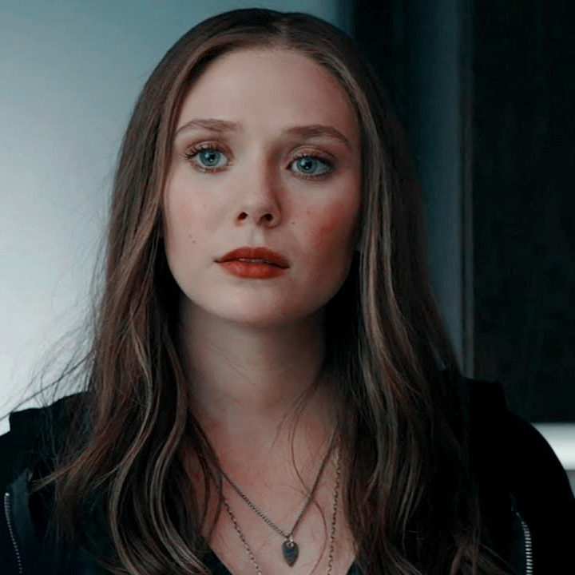

Sobre mí
Soy Wanda Maximoff, conocida como la Bruja Escarlata. Mi vida ha estado marcada por la pérdida, la guerra y el descubrimiento de poderes extraordinarios. He sido Vengadora, heroína y amenaza mundial, pero sobre todo soy una mujer intentando encontrar equilibrio entre el poder y la humanidad.
Contacto
Nacimiento: 1989
Nacionalidad: Sokovia
Residencia: Variable (Multiverso)
wanda.maximoff@avengers.org @ScarletWitchAIdiomas
- Sokoviano - Nativo
- Inglés - Avanzado
- Latín mágico - Avanzado
- Runas antiguas - Avanzado
Citas célebres
- "No puedes controlar el miedo, solo enfrentarlo."
- "He perdido demasiado."
- "No soy un monstruo, soy una madre."
Estudios
- Entrenamiento experimental en HYDRA.
- Estudios avanzados de magia del caos.
- Formación con Agatha Harkness.
- Aprendizaje del Darkhold.
Experiencia profesional
- Miembro de HYDRA.
- Miembro oficial de los Vengadores.
- Defensa del planeta frente a Ultron y Thanos.
- Creación de la realidad de Westview.
- Scarlet Witch.
Habilidades
- Magia del caos
- Telequinesis y telepatía
- Alteración de la realidad
- Proyección astral
- Vuelo
Otros datos
- Alta resiliencia emocional.
- Trabajo en equipo (Avengers).
- Nivel de poder Omega.
Referencias
Doctor Strange - Hechicero Supremo
Clint Barton - Vengador
Vision - Vengador